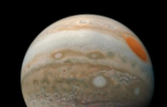

El Planeta Júpiter
Imagen
Datos

Distancia desde el Sol
778,5 millones km
Radio
69.911 km
Gravedad
24,79 m/s²
Masa
1,898 × 10²⁷ kg
Superficie
61,42 miles de millones km²
Duración del día
0d 9h 56m
VOLVER